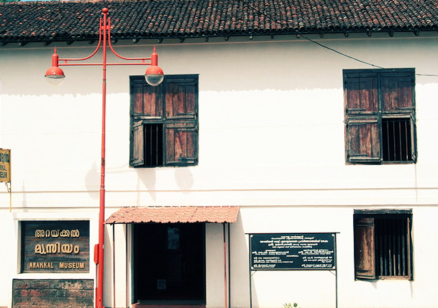
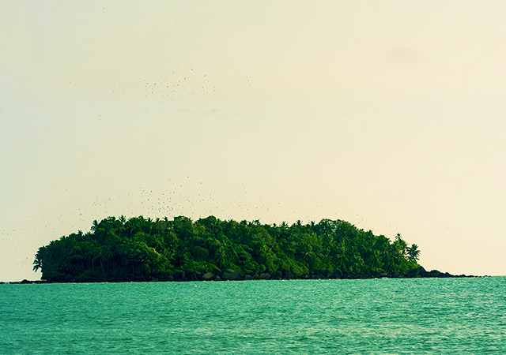
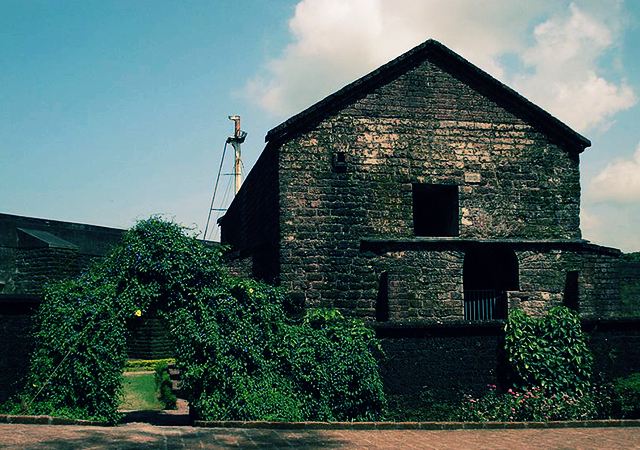
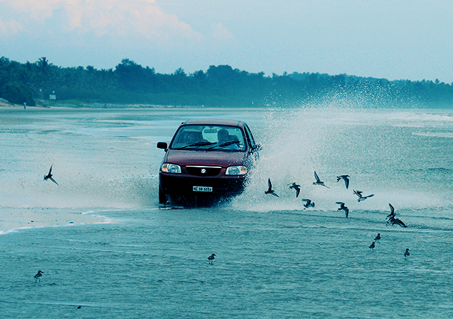
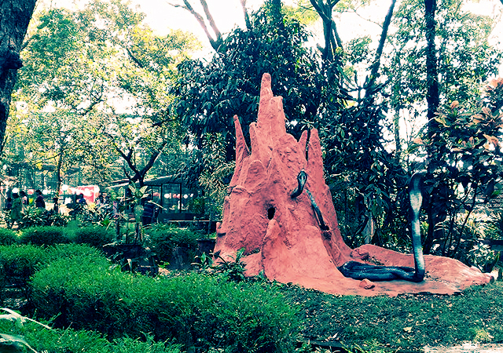

Kannur is a lively mélange of beautiful beaches, historic sites, interesting folk arts and folk music, rituals, religious practices and festivities. Kannur as a historical destination also is home to some of the traditional industrial sectors of Kerala. The region also has its place in the freedom struggle against the British.
1.Arakkal Museum
Arakkal Museum stands as a tribute to the only erstwhile Muslim royal family of Kerala.The Arakkal family has played a notable role in the history of Malabar. The palace is situated in Ayikkara, at a distance of 3 km from Kannur town. The 200-year-old palace has been renovated and converted into a heritage museum in the year 2005.The museum exhibits the history of the Arakkal house and the regional influence of the Arakkal ‘Rajas’ and ‘Beevis’ (the male and female rulers) in the time of their authority.

2.Dharmadam Island
Dharmadam Island (Green Island) is an enchanting paradise located at Thalassery. It’s a beautifully, secluded spot with coconut trees and dense bushes extending upto 5 acres. The island is just 100 meters from the mainland of Dharmadam.The island is surrounded by the Anjarakandy river on three sides and by the Arabian sea on the fourth side. The island is a beautiful sight from the Muzhappilangad beach.

3.St. Angelo Fort
The St.Angelo fort is approximately 3 kms west of Kannur, the place where history stands still.It was built by the Portuguese in 1505 and is strikingly silhouetted against the sea. The fort is a blend of different architectural styles, a remarkable piece of architecture with its triangular design and magnificent interiors. History says that the Dutch captured the fort from the Portuguese in 1663 and sold it to Ali Raja of Kannur.

4.Muzhappilangad Drive-in Beach
Muzhappilangad beach is the one and only drive-in beach in Kerala and the longest drive-in beach in India. You can drive along the 4 kilometres lengthy stretch of the beach without any fear of getting stuck in the sand.The black rocks protect the beach from the strong currents of the sea. These rocks are also the home of blue mussel, a delicious seafood.

5.Parassinikkadavu Snake Park
Parassinikkadavu Snake Park is one of the major attractions in Kannur. It is located in Anthoor Municipality about 16 kms from Kannur Corporation. The snake park was founded for the conservation and preservation of snakes in Kerala.There is a large collection of venomous snakes like Spectacled Cobra, King Cobra, Russell’s viper, Krait and various pit vipers and non-poisonous snakes including pythons.
